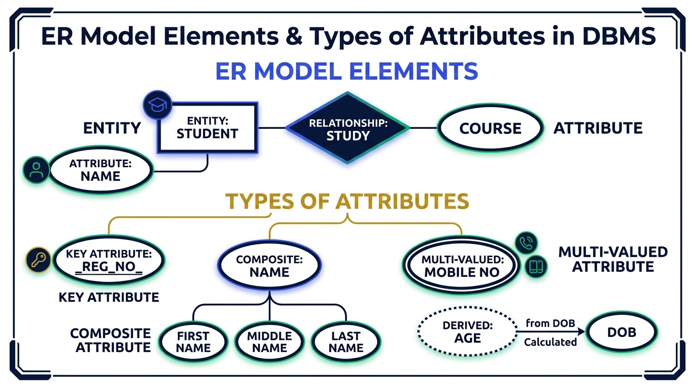

ER Model & Types of Attributes
Master Entity-Relationship (ER) Modeling, why we use ER diagrams before coding, core elements (Entity, Attribute, Relationship), and all 6 Types of Attributes with exact diagram notations.
💡 1. What is the ER Model & Why Do We Use It?
The Entity-Relationship (ER) Model is a high-level conceptual data model used to visually represent data and its relationships before actual SQL table implementation.
What if you don't make a blueprint? Suppose the house is half-built, and you realize the kitchen is in the wrong room position. Demolishing half-built walls leads to massive financial loss and wasted effort!
Computer Science Parallel: When building software for a client (e.g. School Management System), developers do NOT immediately run
CREATE TABLE or ALTER TABLE commands. Requirements change often! Modifying SQL code repeatedly is complex and error-prone. Instead, developers create an ER Diagram on paper, get client sign-off, and then pass it to coders for database creation.
🧩 2. Core ER Model Elements & Notations
- 1. Entity: Any real-world object that has physical or conceptual existence (e.g.
Student,Course).
ER Symbol: Student (Rectangle) - 2. Attribute: Characteristics or properties that describe an entity (e.g.
Roll_No,Name,Age).
ER Symbol: ( Name ) (Ellipse / Oval) - 3. Relationship (Association): Connection between two or more entities (e.g. Student Studies Course).
ER Symbol: ◇ Studies ◇ (Diamond) - 4. Entity Type / Schema: The overall structural definition consisting of an entity name and its associated attribute set.
🖼️ Visual Diagram: ER Model Symbols & Attribute Types
The diagram below summarizes all ER diagram notations and attribute classifications based on the Gate Smashers lecture:

📌 3. Detailed Breakdown of Attribute Types
1. Single-Valued vs Multi-Valued Attributes 📱
- Single-Valued Attribute: Contains exactly ONE value for an entity instance (e.g.,
Registration_Number,Gender).
Notation: ( Gender ) (Single Ellipse) - Multi-Valued Attribute: Can hold MORE THAN ONE value for a single entity instance (e.g., a student having multiple
Mobile_Numbersor multipleAddresses).
Notation: (( Mobile_No )) (Double Ellipse)
2. Simple vs Composite Attributes 👤
- Simple (Atomic) Attribute: Cannot be divided into smaller sub-components (e.g.,
Age = 20). - Composite Attribute: Composed of multiple sub-attributes that can be divided further (e.g.,
Name→First_Name,Middle_Name,Last_Name;Address→Street,City,State,Pincode).
3. Stored vs Derived Attributes 📅
- Stored Attribute: Value is fixed and stored directly in the database (e.g.,
Date_of_Birth). - Derived Attribute: Value is NOT stored directly; it is dynamically calculated from existing stored attributes (e.g.,
Agecalculated by subtractingDOBfrom current date;Course_End_Datederived fromStart_Date+Duration).
Notation: (: Age :) (Dotted / Dashed Ellipse)
4. Key vs Non-Key Attributes (Exam Star ⭐)
- Key Attribute: Uniquely identifies each record/row in an entity set with zero repetition (e.g.,
Registration_Number,Roll_No,SSN).
Notation: ( Reg_No ) (Underlined Text inside Ellipse) - Non-Key Attribute: Values are not guaranteed to be unique and can repeat across records (e.g.,
Name,Age,City).
5. Required vs Optional Attributes 📋
- Required Attribute: Value is mandatory (Cannot be NULL, enforced using
NOT NULLconstraint, e.g.Student_Name). - Optional Attribute: Value can be left blank or NULL (e.g.,
Middle_Name).
6. Complex Attribute 🔄
An attribute that is both Composite AND Multi-Valued simultaneously (e.g., a student having multiple residential addresses, where each address is further divided into Street, City, and Pincode).
⚖️ Summary Table: Attribute Types & ER Notations
| Attribute Category | Key Definition | Real-Life Example | ER Diagram Notation |
|---|---|---|---|
| Key Attribute | Uniquely identifies an entity instance | Registration_No, Roll_No |
Underlined Text inside Ellipse |
| Multi-Valued | Holds more than one value per entity | Mobile_Number, Phone_No |
Double Ellipse |
| Derived Attribute | Calculated dynamically from another attribute | Age (from DOB) |
Dotted / Dashed Ellipse |
| Composite Attribute | Divided into sub-components | Name (First, Middle, Last) |
Branching Ellipses |
| Simple / Stored | Atomic fixed value | Date_of_Birth |
Single Ellipse |
🎯 GATE, UGC-NET & IBPS SO IT Officer — Exam Focus Questions
Q1: How is a Multi-Valued attribute represented in an ER Diagram?
👉 Answer: Double Ellipse (( Mobile_No )).
Q2: How is a Derived attribute represented in an ER Diagram?
👉 Answer: Dotted / Dashed Ellipse.
Q3: How is a Primary Key / Key attribute represented in an ER Diagram?
👉 Answer: Text with an Underline inside an Ellipse ( Roll_No ).
Q4: An attribute like Name which is divided into First_Name, Middle_Name, and Last_Name is called?
👉 Answer: Composite Attribute.
Q5: What symbol represents a Relationship in an ER Diagram?
👉 Answer: Diamond < Relationship >.